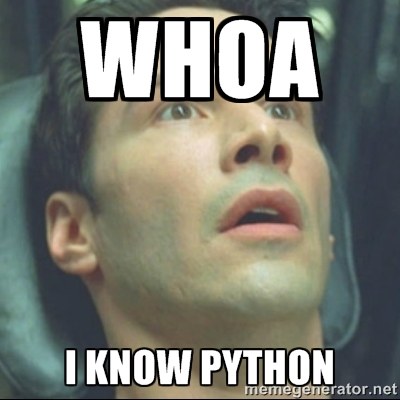
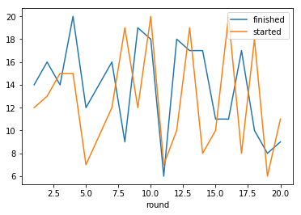

Blogging from a Python Jupyter Notebook
This is a follow on post to Stefan’s original to show how to generate a blog post from a Jupyter Notebook instead of an R markdown. This post itself started off life as a Jupyter Notebook which lives in the same content/posts folder as the other Rmd files used for the site. We’ll walk through how it became a blog post.
The process is a little more complicated than for the Rmd files (since that’s what Blogdown was built for but we can still get it to work relatively easily. The process will involve setting up the Jupyter Notebook as usual, converting to a standard Markdown file, and then making some minor edits to make sure everything displays correctly.
Step 0: Start off with the header block
The first thing you’ll notice (if you’re looking at the original notebook file) is the Rmd style header block at the top of the notebook. This would not generally be part of a Jupyter Notebook or a regular Markdown file, but Blogdown requires it so that it knows what to do with this post we I just copy-pasted one from another post and edited it accordingly.
For this post it looks like
---
title: Blogging from a Python Jupyter Notebook
author: Marlan
date: 2018-03-30
categories:
- Python
tags:
- Blogdown
- Python
output:
blogdown::html_page:
toc: true
---
Step 1: Prepare a Jupyter Notebook with some useful content
Basic Formatting
We’ll start off with some text.
You can use all the usual markdown stuff like bold text and italics,
quotes
> Beautiful is better than ugly.
Explicit is better than implicit.
Simple is better than complex.
Complex is better than complicated.
and lists
Jupyter uses the same flavour of markdown as Github so you can refer to the reference here for more complicated formatting
Images

Place any images you want to include in the static/Pictures folder (create a specific folder in there for your post to keep things neat).
The syntax to insert an image is the same as in the Rmd. For example, for the image above I used

Note that I used the relative path to the image from the content/Posts folder so that the image displays correctly in the Jupyter Notebook. If you used this as is in Blogdown, it wouldn’t work (you’d see a broken image link with the alt text python meme).
Paths are a bit tricksy in Blogdown. It considers the static folder to be the root so we’ll have to change this in the final markdown to

Code
Of course the whole point of doing this in a Jupyter Notebook is to actually write and run some code (otherwise we could just write this in plain Markdown)
Let’s get some interesting data from a public api and do a quick plot. I’m going to track driver Fernando Alonso’s travails during the 2017 Formula 1 season, grabbing data from this site.
We’ll use the requests library to make the HTTP GET request to the API
import requests
import json
alonso_results = requests.get("https://ergast.com/api/f1/2017/drivers/alonso/results.json").json()
print(json.dumps(alonso_results, indent=2))
{
"MRData": {
"xmlns": "http://ergast.com/mrd/1.4",
"series": "f1",
"url": "http://ergast.com/api/f1/2017/drivers/alonso/results.json",
"limit": "30",
"offset": "0",
"total": "19",
"RaceTable": {
"season": "2017",
"driverId": "alonso",
"Races": [
{
"season": "2017",
"round": "1",
"url": "https://en.wikipedia.org/wiki/2017_Australian_Grand_Prix",
"raceName": "Australian Grand Prix",
"Circuit": {
"circuitId": "albert_park",
"url": "http://en.wikipedia.org/wiki/Melbourne_Grand_Prix_Circuit",
"circuitName": "Albert Park Grand Prix Circuit",
"Location": {
"lat": "-37.8497",
"long": "144.968",
"locality": "Melbourne",
"country": "Australia"
}
},
"date": "2017-03-26",
"time": "05:00:00Z",
"Results": [
{
"number": "14",
"position": "14",
"positionText": "R",
"points": "0",
"Driver": {
"driverId": "alonso",
"permanentNumber": "14",
"code": "ALO",
"url": "http://en.wikipedia.org/wiki/Fernando_Alonso",
"givenName": "Fernando",
"familyName": "Alonso",
"dateOfBirth": "1981-07-29",
"nationality": "Spanish"
},
"Constructor": {
"constructorId": "mclaren",
"url": "http://en.wikipedia.org/wiki/McLaren",
"name": "McLaren",
"nationality": "British"
},
"grid": "12",
"laps": "50",
"status": "Vibrations",
"FastestLap": {
"rank": "17",
"lap": "48",
"Time": {
"time": "1:30.077"
},
"AverageSpeed": {
"units": "kph",
"speed": "211.938"
}
}
}
]
},
.
.
.
]
}
}
}
This JSON response is quite long, containing a lot of information we’re not going to use (interesting though). In Jupyter, this output would be contained in a scrollable cell. For this blog post I’ve shortened it manually in the mardown to just one result record. Let’s strip out just the info we need from the full JSON response to a nice tidy dataframe.
import pandas as pd
import matplotlib.pyplot as plt
alonso_results_list = [
{
"round": int(race["round"]),
"started": int(race["Results"][0]["grid"]),
"finished": int(race["Results"][0]["position"])
} for race in alonso_results["MRData"]["RaceTable"]["Races"]
]
alonso_results_list
[{'finished': 14, 'round': 1, 'started': 12},
{'finished': 16, 'round': 2, 'started': 13},
{'finished': 14, 'round': 3, 'started': 15},
{'finished': 20, 'round': 4, 'started': 15},
{'finished': 12, 'round': 5, 'started': 7},
{'finished': 16, 'round': 7, 'started': 12},
{'finished': 9, 'round': 8, 'started': 19},
{'finished': 19, 'round': 9, 'started': 12},
{'finished': 18, 'round': 10, 'started': 20},
{'finished': 6, 'round': 11, 'started': 7},
{'finished': 18, 'round': 12, 'started': 10},
{'finished': 17, 'round': 13, 'started': 19},
{'finished': 17, 'round': 14, 'started': 8},
{'finished': 11, 'round': 15, 'started': 10},
{'finished': 11, 'round': 16, 'started': 20},
{'finished': 17, 'round': 17, 'started': 8},
{'finished': 10, 'round': 18, 'started': 18},
{'finished': 8, 'round': 19, 'started': 6},
{'finished': 9, 'round': 20, 'started': 11}]
alonso_results_df = pd.DataFrame(alonso_results_list).set_index("round")
alonso_results_df
| finished | started | |
|---|---|---|
| round | ||
| 1 | 14 | 12 |
| 2 | 16 | 13 |
| 3 | 14 | 15 |
| 4 | 20 | 15 |
| 5 | 12 | 7 |
| 7 | 16 | 12 |
| 8 | 9 | 19 |
| 9 | 19 | 12 |
| 10 | 18 | 20 |
| 11 | 6 | 7 |
| 12 | 18 | 10 |
| 13 | 17 | 19 |
| 14 | 17 | 8 |
| 15 | 11 | 10 |
| 16 | 11 | 20 |
| 17 | 17 | 8 |
| 18 | 10 | 18 |
| 19 | 8 | 6 |
| 20 | 9 | 11 |
And then plot those results
alonso_results_df.plot()

All a bit up and down really.
Right that should be enough content for our blog.
Step 2: Convert the Jupyter Notebook to a Markdown file
Jupyter comes with a command line tool called nbconvert to convert notebooks to a variety of other formats. We will call it as follows
jupyter nbconvert --to=markdown Blogging_from_Jupyter.ipynb
Step 3: Get everything into the Blogdown project
- Clone the StatsLab_Blogdown project with
git clone git@github.com:Eighty20/StatsLab_Blogdown.git - Make sure you’re up to date with the latest version
git checkout master git pull - Checkout a new branch
git checkout -b your_blog_post_name - Assuming you ran the notebook and created the markdown file in some separate location, copy the markdown file to the
contents/postsfolder - Copy any images created into the
static/Picturesfolder. When you created the markdown file it will have created a folder in that location calledyour_blog_post_name_Files. Make sure you grab these as well - Open the markdown file you copied into
contents/postsand edit any of the image file paths to/Pictures/your_image_name.png
Step 4: Run Blogdown in RStudio to preview the results
Step 5: Make a pull request to the StatsLab project
- Push your branch to github
git push --set-upstream origin your_blog_post_name - Go to the github page for this project
https://github.com/Eighty20/StatsLab_Blogdown - From the dropdown select your branch and then click
New pull requestand follow the instructions - Once the pull request has been accepted your blog post should appear